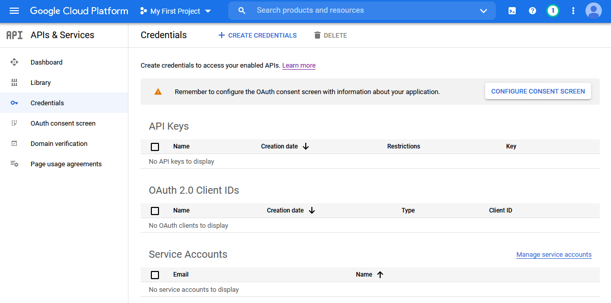

Last updated 10 February 2024
Command line users: See here for GCS setup
using gcloud CLI.
This is a rundown for beginners of how to set up a Google Cloud Services account so you can start using Google Document AI.
Authentication
The biggest hurdle to using any Google API is authentication. It can be daunting, partly because it involves abstract new concepts like “service accounts”, “Oauth2.0”, and “scopes”, and partly because the website you have to work with – the Google Cloud Console – is a nightmare to navigate.
There are several different ways to authenticate to GCS from R, and
you may have seen that different R packages do it slightly differently
(see e.g. gmailr and bigrquery). This vignette takes
an opinionated approach and recommends using service accounts and json
key files. It involves a little bit more hands-on configuration than
some of the setup wizards in other R packages, but my thinking is that
if you are computer-literate enough to consider using an API, you are
probably also able to navigate the GCS and set environmental variables
in R. But know that there are several
other
authentication strategies, and you can use daiR with most
of them so long as you obtain an authentication token.
There are nine main steps to go through before you can start using
daiR.
Step 1: Get a Gmail account
If you have one already, you can use that. Or you can create a burner account for your GCS work.
Step 2: Activate the Google Cloud Console
While logged in to your gmail account, go to the Google Cloud Console. Agree to the terms of service and click “Try for free”.

Accept the terms again, and add an address and a credit card. This last part is a prerequisite for using GCS. But Google Document AI is not particularly expensive to use; see the FAQ page for updated prices.
Step 3: Link your project to your billing account
The largest “unit” of your GCS activities is your project. You can think of it as your root folder, since you will most likely only ever need one unless you are a business or a developer (though in principle you can have as many projects as you like).
When you activate GCS, you are assigned a project named “My first project”. Click on “My first project” in the top blue bar, just to the right of “Google cloud services”. You’ll see a screen like this:

Note that your project has an ID, usually consisting of an
adjective, a noun, and a number. You’ll need this soon, so I recommend
opening RStudio and storing it as a vector with
project_id <- "<your project id>".
Return to the Google Cloud Console and look at the left column. Toward the top you see an entry called “Billing”. Click it. You’ll get to a screen saying “This project has no billing account”. Click “link a billing account” and set the billing account to “My billing account”.

All this is necessary for you to be able to use Google Document AI (DAI) and related services programmatically.
Step 4: Set up a service account
Now we need to create a service account. Bring out the navigation menu on the left hand side by clicking the little circle with the three horizontal lines in the top left of the screen. Click on “APIs and services.” Then click on “credentials” in the left pane. You should see this:

Click on “create credentials” in the top middle, then choose service account. Give it any name you like (e.g. “my_rstudio_service_account”) and a description (e.g. “Interacting with GCS through R”) and click “create”.
In section 2 titled “Grant this service account access to project”, add “Basic > Owner” to the service account’s roles.

Click “continue”, then “done” at the bottom. You should now see your service account listed at the bottom.

Step 5: Download a json file with the service account key
Now we need to generate a JSON file containing the credentials for
this service account. Click the small edit icon on the bottom right. On
the next page, click “add key”, choose “create new key”, select JSON
format, and click “create”. This should prompt a save file window. Save
the file to your hard drive. You can change the name to something more
memorable if you like (but keep the .json extension). Also,
take note of where you stored it. Now we are done in the Google Cloud
Console and can finally start working in RStudio.
Step 6: Store the path to the credentials file as an environmental variable
You want daiR to automatically authenticate you when you
load the package so you don’t have to fiddle with authentication every
time. For this to happen, you need to tell R where it can find the JSON
file with the credentials. We do this by storing the path to the json
file as an environmental variable in your .Renviron file.
Start by writing the following in your RStudio console:
usethis::edit_r_environ()This will open a pane with your .Renviron file. If you
haven’t modified it before, it is probably empty.
All you need to do is add a line with the following:
GCS_AUTH_FILE='<full path to the json file you stored earlier>'.
Make sure all the slashes in the filepath are forward slashes. It should
look something like this:
GCS_AUTH_FILE='path/to/gcs-service-account-file.json'Save the file, close it, and restart RStudio. If you try to load
daiR now with library(daiR), you will be
auto-authenticated, but there are a few more steps left before you can
start processing.
Step 7: Activate Document AI
Head back to your browser and the GCS website. We now need to activate the Google Document AI API for your account. Open the navigation menu on the left hand side. Click on “APIs and services”. Then click on “Enable APIs and Services”, type “document ai” in the search field, click on “Cloud Document AI API”, and then “Enable”.
Step 8: Create a processor
In order to process documents, you also need to set up an OCR
processor. This is easiest done inside R using the function
daiR::create_processor.1 We start by loading the daiR
package.
You now need to think of a globally unique display name for the
processor, to be supplied with the create_processor()
function. Processor names are shared across the GCS ecosystem, so simple
ones like “processor” or “my-processor” are probably already taken.
Instead try something along the lines of “ocr-general-9567”.
If successful, the create_processor() function will
return a processor id, a 16-character sequence of random numbers and
letters. Take good note of it, for while the name (“ocr-general-9567”)
is just a display name to help you distinguish between processors when
you have several, the id is what really identifies it to the Document AI
API.
## NOT RUN
id <- create_processor("<my-unique-processor-name>")It is possible to create more than one processor, but most users only
need one at any given time. To view your processors, run
daiR::get_processors(). Should you wish to delete one, use
daiR::delete_processor().
There are several different
types of processors available, but most users will want the generic
one (called OCR_PROCESSOR), and this is what
daiR::create_processor() defaults to. The other main type
to note is FORM_PARSER_PROCESSOR, which can identify
tables.
Processor types also come in different versions, with each version representing a snapshot of the underlying machine learning model. There will typically be a couple of stable versions and a more recent, pre-release version of any one processor type. The difference in performance between versions is rarely substantial, so you do not need to worry about specifying a processor version at this stage.
Step 9: Store the processor id as an environment variable
Every Document AI processing request needs to contain a processor id,
so I strongly recommend storing the id you just generated in an
environment variable called DAI_PROCESSOR_ID. All of
daiR’s processing functions are set up to look for this
variable.
Open your .Renviron file by calling
usethis::edit_r_environ(). Add
DAI_PROCESSOR_ID="<your processor id>" on a separate
line. Your .Renviron may now look something like this:
GCS_AUTH_FILE='path/to/gcs-service-account-file.json'
DAI_PROCESSOR_ID='1234567890abcdef'Save .Renviron and restart RStudio. That’s it: You’re
now ready to start
processing. Note that in order to process asynchronously (best for
large batches), you will need to familiarise yourself with Google Cloud
Storage as well, so you may want to look at the vignette on Google
Cloud Storage right away.
Cheatsheet
If you ever get lost in the jungle of GCS terms, check out the concept cheatsheet.
It is also possible to create processors manually in the Google Cloud Console.↩︎